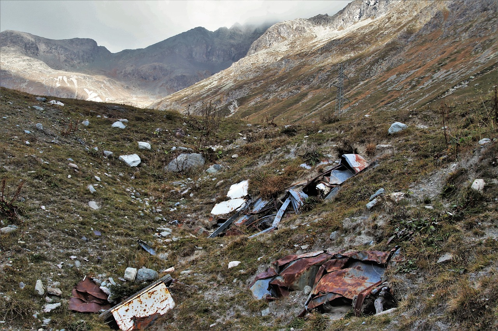

РЕШЕНИЕ ЭКОЛОГИЧЕСКОГО ВОПРОСА
Правильно
К сожалению или к счастью, анархизм (и экофашизм, но вряд ли это привлекательный вариант) может быть единственным способом решить проблему экологии — согласно некоторым исследованиям, сегодня мы стоим на перепутье между социальной революцией и экокатастрофой¹.
Локализованные эгалитарные общества, объединённые сетью всемирной связи и взаимодействия — лучший путь для спасения окружающей среды²³. Самодостаточные общества почти не тратят углеродных ресурсов. Им не нужна нефть для транспортировки товаров и отходов или гигантские объёмы электроэнергии для питания промышленных комплексов, производящих товары на экспорт. Они будут производить большую часть энергии для потребления при помощи солнечных, ветряных, биотопливных и других технологий и больше полагаться на сделанное руками, а не устройствами. Такие общества производят меньшее загрязнение, ибо имеют меньше стимулов к массовому производству и им сложно захоранивать отходы на землях других сообществ. На месте перегруженных аэропортов и забитых шоссе мы можем представить себе велосипеды, автобусы, межрегиональные поезда и парусники. Также, население не будет неконтролируемо расти, ибо люди смогут лучше контролировать деторождение, а локальные экономики сделают очевидным ограниченность ресурсов.
И, хотя с точки зрения защиты окружающей среды почти любая социальная система будет лучше той, которую мы имеем сейчас, стоит отметить, что государства вряд ли помогут нам, ибо социалистические государства, такие как Советский Союз и Китайская Народная Республика, были одними из самых разрушительных для природы, которые только можно представить.
1. См. статью Science says revolt.
2. Примером такого сообщества может быть Тонга — это тихоокеанский архипелаг, населённый десятками тысяч полинезийцев. До колонизации здесь была монархическая система — впрочем, гораздо ограниченнее и децентрализованнее государств. В течение 3 200 лет народ Тонга поддерживал устойчивое хозяйство на архипелаге площадью 746 квадратных километров. Источник: Jared Diamond, Collapse: How Societies Choose to Fail or Succeed, New York, Viking, 2005.
3. Другой пример: крупное сообщество горцев Новой Гвинеии без лидера — см. напр. лекцию Джеймса С. Скотта «Цивилизации не могут лазить по холмам».
Неправильно
К сожалению или к счастью, анархизм (и экофашизм, но вряд ли это привлекательный вариант) может быть единственным способом решить проблему экологии — согласно некоторым исследованиям, сегодня мы стоим на перепутье между социальной революцией и экокатастрофой¹.
Локализованные эгалитарные общества, объединённые сетью всемирной связи и взаимодействия — лучший путь для спасения окружающей среды²³. Самодостаточные общества почти не тратят углеродных ресурсов. Им не нужна нефть для транспортировки товаров и отходов или гигантские объёмы электроэнергии для питания промышленных комплексов, производящих товары на экспорт. Они будут производить большую часть энергии для потребления при помощи солнечных, ветряных, биотопливных и других технологий и больше полагаться на сделанное руками, а не устройствами. Такие общества производят меньшее загрязнение, ибо имеют меньше стимулов к массовому производству и им сложно захоранивать отходы на землях других сообществ. На месте перегруженных аэропортов и забитых шоссе мы можем представить себе велосипеды, автобусы, межрегиональные поезда и парусники. Также, население не будет неконтролируемо расти, ибо люди смогут лучше контролировать деторождение, а локальные экономики сделают очевидным ограниченность ресурсов.
И, хотя с точки зрения защиты окружающей среды почти любая социальная система будет лучше той, которую мы имеем сейчас, стоит отметить, что государства вряд ли помогут нам, ибо социалистические государства, такие как Советский Союз и Китайская Народная Республика, были одними из самых разрушительных для природы, которые только можно представить.
1. См. статью Science says revolt.
2. Примером такого сообщества может быть Тонга — это тихоокеанский архипелаг, населённый десятками тысяч полинезийцев. До колонизации здесь была монархическая система — впрочем, гораздо ограниченнее и децентрализованнее государств. В течение 3 200 лет народ Тонга поддерживал устойчивое хозяйство на архипелаге площадью 746 квадратных километров. Источник: Jared Diamond, Collapse: How Societies Choose to Fail or Succeed, New York, Viking, 2005.
3. Другой пример: крупное сообщество горцев Новой Гвинеии без лидера — см. напр. лекцию Джеймса С. Скотта «Цивилизации не могут лазить по холмам».